Normalized Gauss-Hermite Quadrature
Gaussian Quadrature rules provide sets of x values, called abscissae, and corresponding weights, w, to approximate an integral with respect to a weight function, $g(x)$. For a kth order rule the approximation is
\[\int f(x)g(x)\,dx \approx \sum_{i=1}^k w_i f(x_i)\]
For the Gauss-Hermite rule the weight function is
\[g(x) = e^{-x^2}\]
and the domain of integration is $(-\infty, \infty)$. A slight variation of this is the normalized Gauss-Hermite rule for which the weight function is the standard normal density
\[g(z) = \phi(z) = \frac{e^{-z^2/2}}{\sqrt{2\pi}}\]
Thus, the expected value of $f(z)$, where $\mathcal{Z}\sim\mathscr{N}(0,1)$, is approximated as
\[\mathbb{E}[f]=\int_{-\infty}^{\infty} f(z) \phi(z)\,dz\approx\sum_{i=1}^k w_i\,f(z_i) .\]
Naturally, there is a caveat. For the approximation to be accurate the function $f(z)$ must behave like a low-order polynomial over the range of interest. More formally, a kth order rule is exact when f is a polynomial of order 2k-1 or less. [1]
Evaluating the weights and abscissae
In the Golub-Welsch algorithm the abscissae for a particular Gaussian quadrature rule are determined as the eigenvalues of a symmetric tri-diagonal matrix and the weights are derived from the squares of the first row of the matrix of eigenvectors. For a kth order normalized Gauss-Hermite rule the tridiagonal matrix has zeros on the diagonal and the square roots of 1:k-1 on the super- and sub-diagonal, e.g.
using DataFrames, LinearAlgebra, CairoMakie, AlgebraOfGraphics
CairoMakie.activate!(type="svg")
sym3 = SymTridiagonal(zeros(3), sqrt.(1:2))
ev = eigen(sym3);
ev.values3-element Vector{Float64}:
-1.7320508075688739
1.1102230246251565e-15
1.7320508075688774abs2.(ev.vectors[1,:])3-element Vector{Float64}:
0.16666666666666743
0.6666666666666657
0.16666666666666677As a function of k this can be written as
function gausshermitenorm(k)
ev = eigen(SymTridiagonal(zeros(k), sqrt.(1:k-1)))
ev.values, abs2.(ev.vectors[1,:])
endgausshermitenorm (generic function with 1 method)providing
gausshermitenorm(3)([-1.7320508075688739, 1.1102230246251565e-15, 1.7320508075688774], [0.16666666666666743, 0.6666666666666657, 0.16666666666666677])The weights and positions are often shown as a lollipop plot. For the 9th order rule these are
gh9=gausshermitenorm(9)
stem(gh9[1], gh9[2]; axis=(ylabel="Weight",))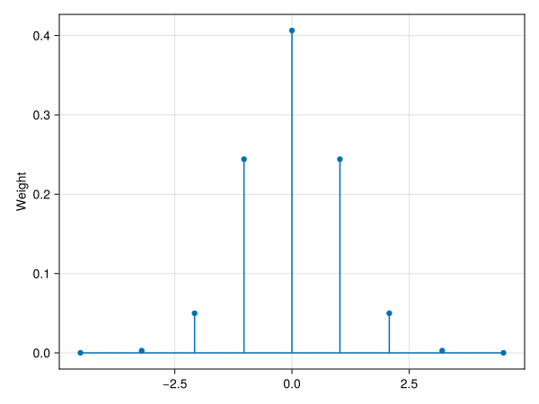
Notice that the magnitudes of the weights drop quite dramatically away from zero, even on a logarithmic scale
stem(gh9[1], gh9[2]; axis=(ylabel="Weight (log scale)", yscale=Makie.LogScale()))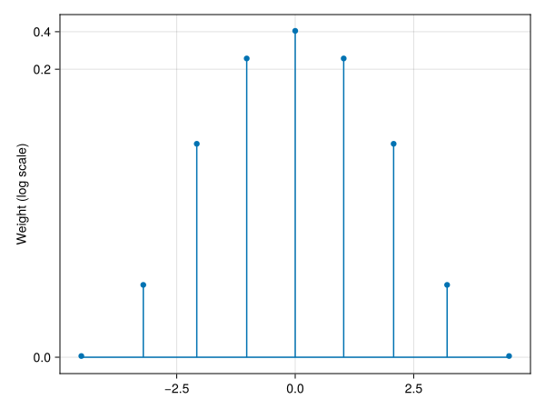
The definition of MixedModels.GHnorm is similar to the gausshermitenorm function with some extra provisions for ensuring symmetry of the abscissae and the weights and for caching values once they have been calculated.
MixedModels.GHnorm — Function
GHnorm(k::Int)Return the (unique) GaussHermiteNormalized{k} object.
The function values are stored (memoized) when first evaluated. Subsequent evaluations for the same k have very low overhead.
using MixedModels, MixedModelsDatasets
GHnorm(3)MixedModels.GaussHermiteNormalized{3}([-1.7320508075688772, 0.0, 1.7320508075688772], [0.16666666666666666, 0.6666666666666666, 0.16666666666666666])By the properties of the normal distribution, when $\mathcal{X}\sim\mathscr{N}(\mu, \sigma^2)$
\[\mathbb{E}[g(x)] \approx \sum_{i=1}^k g(\mu + \sigma z_i)\,w_i\]
For example, $\mathbb{E}[\mathcal{X}^2]$ where $\mathcal{X}\sim\mathcal{N}(2, 3^2)$ is
μ = 2; σ = 3; ghn3 = GHnorm(3);
sum(@. ghn3.w * abs2(μ + σ * ghn3.z)) # should be μ² + σ² = 1313.0(In general a dot, '.', after the function name in a function call, as in abs2.(...), or before an operator creates a fused vectorized evaluation in Julia. The macro @. has the effect of vectorizing all operations in the subsequent expression.)
Application to a model for contraception use
A binary response is a "Yes"/"No" type of answer. For example, in a 1989 fertility survey of women in Bangladesh (reported in Huq, N. M. and Cleland, J., 1990) one response of interest was whether the woman used artificial contraception. Several covariates were recorded including the woman's age (centered at the mean), the number of live children the woman has had (in 4 categories: 0, 1, 2, and 3 or more), whether she lived in an urban setting, and the district in which she lived. The version of the data used here is that used in review of multilevel modeling software conducted by the Center for Multilevel Modelling, currently at University of Bristol (http://www.bristol.ac.uk/cmm/learning/mmsoftware/data-rev.html). These data are available as the :contra dataset.
contra = DataFrame(MixedModelsDatasets.dataset(:contra))
describe(contra)| Row | variable | mean | min | median | max | nmissing | eltype |
|---|---|---|---|---|---|---|---|
| Symbol | Union… | Any | Union… | Any | Int64 | DataType | |
| 1 | dist | D01 | D61 | 0 | String | ||
| 2 | urban | N | Y | 0 | String | ||
| 3 | livch | 0 | 3+ | 0 | String | ||
| 4 | age | 0.00204757 | -13.56 | -1.56 | 19.44 | 0 | Float64 |
| 5 | use | N | Y | 0 | String |
A smoothed scatterplot of contraception use versus age
draw(data(contra) * mapping(:age, :use => ==("Y")) * smooth();
axis=(; xlabel="Centered age (yr)", ylabel="Contraception use"))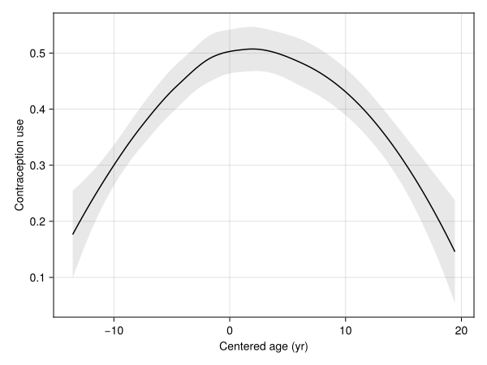
shows that the proportion of women using artificial contraception is approximately quadratic in age.
A model with fixed-effects for age, age squared, number of live children and urban location and with random effects for district, is fit as
const form1 = @formula use ~ 1 + age + abs2(age) + livch + urban + (1|dist);
m1 = fit(MixedModel, form1, contra, Bernoulli(), fast=true)Generalized Linear Mixed Model fit by maximum likelihood (nAGQ = 1)
use ~ 1 + age + :(abs2(age)) + livch + urban + (1 | dist)
Distribution: Bernoulli{Float64}
Link: LogitLink()
logLik deviance AIC AICc BIC
-1186.3922 2372.7844 2388.7844 2388.8592 2433.3231
Variance components:
Column VarianceStd.Dev.
dist (Intercept) 0.22533 0.47469
Number of obs: 1934; levels of grouping factors: 60
Fixed-effects parameters:
──────────────────────────────────────────────────────
Coef. Std. Error z Pr(>|z|)
──────────────────────────────────────────────────────
(Intercept) -1.01528 0.173972 -5.84 <1e-08
age 0.00351074 0.00921014 0.38 0.7031
abs2(age) -0.0044865 0.000722797 -6.21 <1e-09
livch: 1 0.801876 0.161867 4.95 <1e-06
livch: 2 0.901014 0.184771 4.88 <1e-05
livch: 3+ 0.899415 0.1854 4.85 <1e-05
urban: Y 0.684404 0.119684 5.72 <1e-07
──────────────────────────────────────────────────────For a model such as m1, which has a single, scalar random-effects term, the unscaled conditional density of the spherical random effects variable, $\mathcal{U}$, given the observed data, $\mathcal{Y}=\mathbf{y}_0$, can be expressed as a product of scalar density functions, $f_i(u_i),\; i=1,\dots,q$. In the PIRLS algorithm, which determines the conditional mode vector, $\tilde{\mathbf{u}}$, the optimization is performed on the deviance scale,
\[D(\mathbf{u})=-2\sum_{i=1}^q \log(f_i(u_i))\]
The objective, $D$, consists of two parts: the sum of the (squared) deviance residuals, measuring fidelity to the data, and the squared length of $\mathbf{u}$, which is the penalty. In the PIRLS algorithm, only the sum of these components is needed. To use Gauss-Hermite quadrature the contributions of each of the $u_i,\;i=1,\dots,q$ should be separately evaluated.
const devc0 = map!(abs2, m1.devc0, m1.u[1]); # start with uᵢ²
const devresid = m1.resp.devresid; # n-dimensional vector of deviance residuals
const refs = only(m1.LMM.reterms).refs; # n-dimensional vector of indices in 1:q
for (dr, i) in zip(devresid, refs)
devc0[i] += dr
end
show(devc0)[121.29248012874723, 22.02257337512528, 2.9189004612106744, 30.78771776584869, 47.54204966793003, 69.55502458877193, 23.404687157277163, 46.27907378634902, 24.452780905615157, 7.759490609971417, 9.773662485559427, 42.75903574569562, 27.552494333775982, 156.420451355929, 26.192468534345057, 27.41624930311157, 24.538088910548282, 57.56615452381992, 31.17940371368299, 22.341558785919815, 27.47809480649881, 19.98845665444795, 16.010854756465147, 9.761479059464133, 83.86349401097173, 15.56876929005085, 42.75968318670089, 51.46851377546996, 32.733344587581875, 70.41572380745083, 39.68586972346252, 27.544104135336138, 14.697567286367986, 53.04735405178657, 64.84964759024501, 19.74388066669711, 19.415516148252312, 11.242285667346424, 37.41677487013712, 54.265080573589245, 39.58249525147763, 17.398404723721725, 60.227812784786444, 28.81918581555951, 42.4442550330085, 112.99129200873404, 17.29770218169313, 51.57734312240097, 2.187213832488273, 22.96155935998599, 47.414475686834955, 87.23162385884737, 25.92344375440726, 9.470291354607033, 61.17586305190103, 27.102818193550753, 48.01617448779087, 8.46020266440514, 30.365222100245816, 47.374159527595886]One thing to notice is that, even on the deviance scale, the contributions of different districts can be of different magnitudes. This is primarily due to different sample sizes in the different districts.
using FreqTables
freqtable(contra, :dist)'1×60 Named LinearAlgebra.Adjoint{Int64, Vector{Int64}}
' ╲ dist │ D01 D02 D03 D04 D05 D06 … D56 D57 D58 D59 D60 D61
─────────┼──────────────────────────────────────────────────────────────
1 │ 117 20 2 30 39 65 … 45 27 33 10 32 42Because the first district has one of the largest sample sizes and the third district has the smallest sample size, these two will be used for illustration. For a range of $u$ values, evaluate the individual components of the deviance and store them in a matrix.
const devc = m1.devc;
const xvals = -5.0:2.0^(-4):5.0;
const uv = vec(m1.u[1]);
const u₀ = vec(m1.u₀[1]);
results = zeros(length(devc0), length(xvals))
for (j, u) in enumerate(xvals)
fill!(devc, abs2(u))
fill!(uv, u)
MixedModels.updateη!(m1)
for (dr, i) in zip(devresid, refs)
devc[i] += dr
end
copyto!(view(results, :, j), devc)
endA plot of the deviance contribution versus $u_1$
lines(xvals, view(results, 1, :); axis=(xlabel="u₁", ylabel="Deviance contribution"))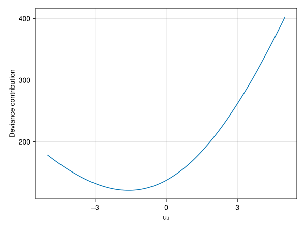
shows that the deviance contribution is very close to a quadratic. This is also true for $u_3$
lines(xvals, view(results, 3, :); axis=(xlabel="u₃", ylabel="Deviance contribution"))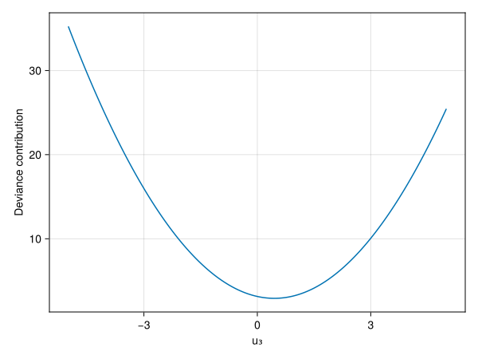
The PIRLS algorithm provides the locations of the minima of these scalar functions, stored as
m1.u₀[1]1×60 Matrix{Float64}:
-1.58477 -0.0727267 0.449058 0.341589 … -0.767069 -0.902922 -1.06625the minima themselves, evaluated as devc0 above, and a horizontal scale, which is the inverse of diagonal of the Cholesky factor. As shown below, this is an estimate of the conditional standard deviations of the components of $\mathcal{U}$.
using MixedModels: block
const s = inv.(m1.LMM.L[block(1,1)].diag);
s'1×60 adjoint(::Vector{Float64}) with eltype Float64:
0.406888 0.713511 0.952164 0.627134 … 0.839678 0.654964 0.603258The curves can be put on a common scale, corresponding to the standard normal, as
for (j, z) in enumerate(xvals)
@. uv = u₀ + z * s
MixedModels.updateη!(m1)
@. devc = abs2(uv) - devc0
for (dr, i) in zip(devresid, refs)
devc[i] += dr
end
copyto!(view(results, :, j), devc)
endlines(xvals, view(results, 1, :); axis=(xlabel="Scaled and shifted u₁", ylabel="Shifted deviance contribution"))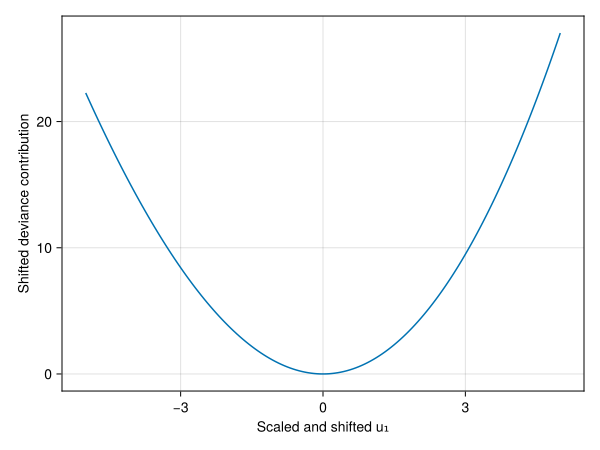
lines(xvals, view(results, 3, :); axis=(xlabel="Scaled and shifted u₃", ylabel="Shifted deviance contribution"))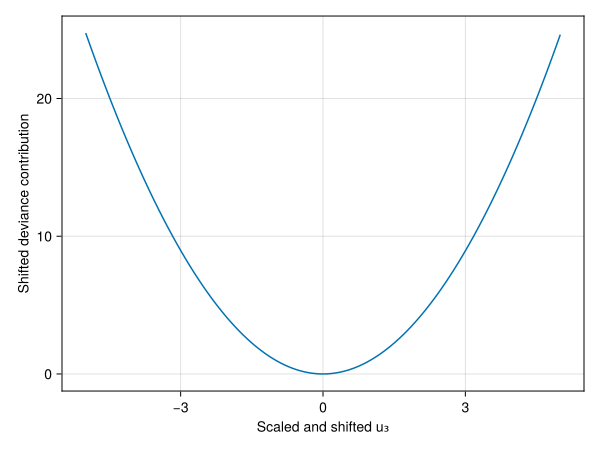
On the original density scale these become
for (j, z) in enumerate(xvals)
@. uv = u₀ + z * s
MixedModels.updateη!(m1)
@. devc = abs2(uv) - devc0
for (dr, i) in zip(devresid, refs)
devc[i] += dr
end
copyto!(view(results, :, j), @. exp(-devc/2))
endlines(xvals, view(results, 1, :); axis=(xlabel="Scaled and shifted u₁", ylabel="Conditional density"))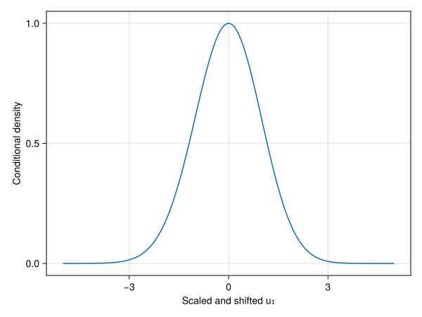
lines(xvals, view(results, 3, :); axis=(xlabel="Scaled and shifted u₃", ylabel="Conditional density"))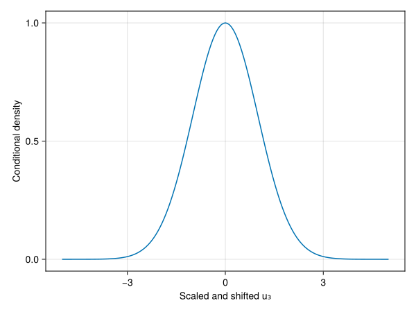
and the function to be integrated with the normalized Gauss-Hermite rule is
for (j, z) in enumerate(xvals)
@. uv = u₀ + z * s
MixedModels.updateη!(m1)
@. devc = abs2(uv) - devc0
for (dr, i) in zip(devresid, refs)
devc[i] += dr
end
copyto!(view(results, :, j), @. exp((abs2(z) - devc)/2))
endlines(xvals, view(results, 1, :); axis=(xlabel="Scaled and shifted u₁", ylabel="Kernel ratio"))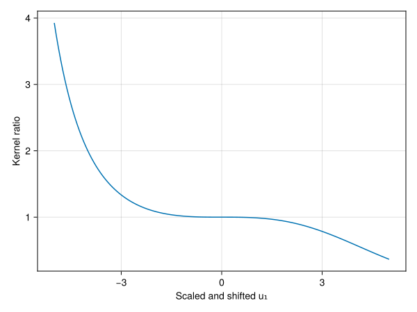
lines(xvals, view(results, 3, :); axis=(xlabel="Scaled and shifted u₃", ylabel="Kernel ratio"))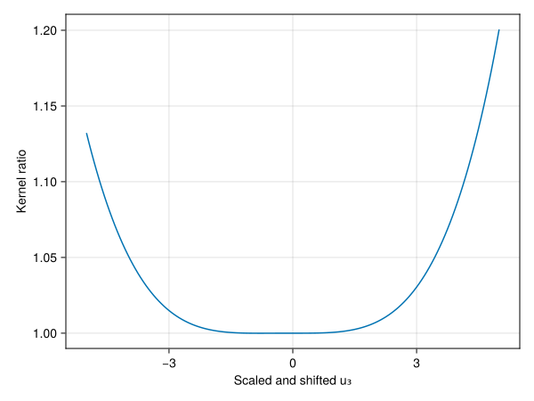
- 1https://en.wikipedia.org/wiki/Gaussian_quadrature